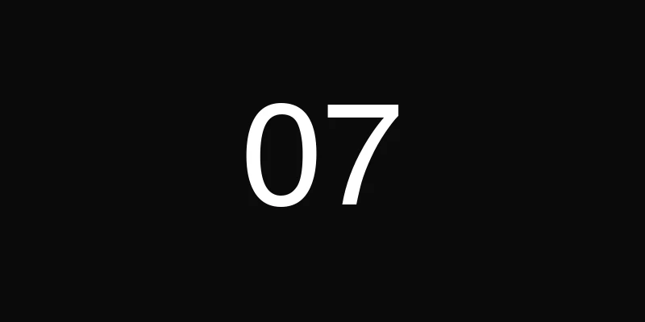

Étape 1 · Le brief éditorial, pas logistique
Commencer par la bonne question
La première question à se poser n'est jamais "quel hôtel ?". C'est : "quelle histoire veut-on que les journalistes racontent ?" Tant qu'on n'a pas la réponse, tout le reste est prématuré. Le brief éditorial est la pierre angulaire du voyage presse. Sans lui, on construit un séjour agréable, mais pas un dispositif médiatique.
Concrètement, le brief éditorial définit quatre éléments fondamentaux : l'angle narratif (le fil rouge du voyage), les messages clés (ce qu'on veut voir repris), le ton éditorial (luxe discret, tech enthousiaste, lifestyle décontracté) et les moments photographiables, ces instants qu'on sait visuellement forts et qui donneront les images de l'article.
L'erreur classique : briefer la logistique avant l'éditorial
On voit régulièrement des marques arriver avec un programme déjà ficelé (les vols sont réservés, le restaurant est choisi, l'hôtel est confirmé) mais sans angle. Le résultat ? Un voyage plaisant dont personne ne parle. Ou pire : des articles génériques qui auraient pu concerner n'importe quelle marque.
L'éditorial doit précéder la logistique. C'est lui qui dicte le choix de la destination, le rythme du programme, la nature des activités. Un brief qui dit "on veut montrer notre engagement pour l'artisanat local" oriente tout : on choisit une destination où cet artisanat existe, on programme des rencontres avec des artisans, on prévoit des moments de fabrication. La logistique suit. Toujours.
Le brief comme document de référence
On formalise ce brief dans un document partagé avec le client, qui devient la boussole du projet. Chaque décision (du choix du traiteur au wording de l'invitation) est validée par rapport à ce brief. Cela évite la dérive la plus courante des voyages presse : l'accumulation de bonnes idées qui ne racontent plus rien ensemble. Le brief garde tout le monde aligné, du premier brainstorm au dernier mail de suivi.
Étape 2 · Le casting de la guest list
La qualité plutôt que la quantité
Huit journalistes bien ciblés valent infiniment plus que trente mal choisis. C'est une conviction qu'on défend systématiquement face aux clients tentés par le volume. Un voyage presse n'est pas un événement de masse : c'est un dispositif d'influence éditoriale qui fonctionne par la pertinence, pas par le nombre.
Les critères de sélection qu'on applique sont précis : ligne éditoriale compatible avec l'univers de la marque, audience alignée avec la cible, disponibilité réelle sur les dates (pas une confirmation de principe qui se transforme en annulation la veille), et historique de couverture : ce journaliste a-t-il déjà traité ce type de sujet ? Dans quel ton ? Avec quelle profondeur ?
L'invitation qui donne envie
L'invitation elle-même est un acte éditorial. On ne dit jamais "vous êtes invité(e) à un voyage presse". On dit : "on aimerait vous montrer quelque chose." La différence est fondamentale. La première formulation sent l'opération RP à plein nez. La seconde crée de la curiosité, du désir, de l'exclusivité.
On personnalise chaque invitation. On fait référence à un article récent du journaliste, on explique pourquoi cette expérience lui correspond spécifiquement. C'est plus de travail, évidemment. Mais le taux de réponse positive est incomparable. Et surtout, le journaliste arrive avec un a priori favorable, déjà engagé dans la démarche.
Gérer les dynamiques de groupe
Un aspect souvent négligé : la compatibilité entre invités. Mélanger un journaliste print très expérimenté avec un influenceur TikTok peut créer des tensions. À l'inverse, des profils complémentaires enrichissent les conversations et créent une émulation. On pense la guest list comme un casting : chaque personne doit apporter quelque chose au groupe, et le groupe doit fonctionner comme un ensemble cohérent pendant plusieurs jours.
Étape 3 · L'itinéraire éditorial jour par jour
Chaque jour a un arc narratif
On structure chaque journée comme un récit : un moment de révélation (la découverte d'un lieu, le dévoilement d'un produit), un moment de connexion (une rencontre, un échange authentique) et du temps libre. Cette alternance est cruciale. Sans elle, le programme ressemble à une visite guidée, et les journalistes ne sont pas des touristes en bus.
Le premier jour est stratégique : il donne le ton. On commence généralement par une immersion forte, quelque chose qui surprend, qui sort du cadre habituel. Le dernier jour, à l'inverse, est plus intime, plus réflexif. On laisse les impressions se déposer. Entre les deux, le rythme alterne temps forts et respirations.
Le temps libre planifié
C'est contre-intuitif, mais le temps libre est le moment le plus productif d'un voyage presse. C'est là que les vraies conversations ont lieu : au bord de la piscine, au bar de l'hôtel, en marchant dans une rue sans programme. C'est là que le journaliste pose les questions qu'il ne poserait pas en interview formelle. C'est là que la confiance se construit.
On planifie donc des plages de temps libre volontaires. Pas par défaut, pas par manque d'idées, par choix éditorial. Et on s'assure que ces moments soient dans un cadre propice aux échanges informels. Un lobby d'hôtel impersonnel ne produit pas le même effet qu'une terrasse avec vue sur la mer.
Alterner les formats
Un bon itinéraire varie les registres : visite privée le matin (culturel, exclusif), atelier ou workshop l'après-midi (participatif, sensoriel), dîner d'exception le soir (convivial, mémorable). Cette alternance maintient l'attention, multiplie les angles d'articles potentiels et crée une richesse d'expériences qui se traduit naturellement en richesse éditoriale. Le journaliste ne se dit pas "j'ai un sujet", il se dit "j'ai trois sujets possibles".

Étape 4 · La logistique invisible
Le meilleur compliment : "c'était tellement fluide"
Vols, transferts, rooming list, régimes alimentaires, timing minute par minute : la logistique d'un voyage presse est un casse-tête opérationnel considérable. Mais la marque d'une production excellente, c'est que les invités ne voient rien de cette complexité. Tout est fluide. Le transport arrive avant qu'on le cherche. La chambre est prête avant qu'on y pense. Le dîner commence quand tout le monde est assis, pas quand le traiteur est prêt.
C'est un travail d'anticipation permanent. On prépare des plans B pour chaque étape critique : un vol annulé, un restaurant qui ferme, une météo qui change. On a des solutions de repli pré-négociées pour ne jamais être pris au dépourvu devant les invités.
Les détails qui changent tout
La logistique invisible, ce sont aussi les micro-attentions : une bouteille d'eau dans le van, un adaptateur secteur dans la chambre, le Wi-Fi qui fonctionne partout, un planning imprimé glissé sous la porte chaque matin. Aucun de ces détails n'est spectaculaire. Mais leur absence se remarque immédiatement, et leur présence crée un sentiment de prise en charge totale qui libère l'esprit du journaliste pour ce qui compte : observer, écouter, écrire.
Le conducteur minute par minute
On travaille avec un document interne (le conducteur) qui détaille chaque journée en tranches de quinze minutes. Qui fait quoi, où, avec quel matériel, quel contact sur place. Ce document n'est jamais montré aux invités. C'est l'envers du décor, le script que l'équipe de production suit pour que tout semble naturel. Paradoxalement, plus la préparation est millimétrée, plus l'expérience paraît spontanée. C'est exactement le même principe qu'au théâtre : des mois de répétition pour que tout ait l'air improvisé.
Étape 5 · Le gifting intelligent
Oubliez les goody bags génériques
Le sac de goodie posé sur le lit à l'arrivée, rempli de produits hétéroclites et d'un communiqué de presse : c'est terminé. Ou plutôt, ça ne devrait jamais avoir commencé. Le gifting d'un voyage presse doit être pensé avec la même rigueur éditoriale que le reste du programme. Un cadeau qui ne raconte rien encombre une valise. Un cadeau qui prolonge l'expérience devient un objet dont on parle.
La règle qu'on applique : le gift doit être connecté à l'expérience vécue et à la marque. Si le voyage explore le savoir-faire artisanal de la marque, le cadeau peut être une pièce fabriquée pendant un atelier du programme. Si la destination est un vignoble, une cuvée exclusive fait plus sens qu'un carnet de notes brandé.
Utile ou émotionnel, idéalement les deux
Un bon gift est soit utile, soit émotionnel. Dans l'idéal, il est les deux. Utile, cela signifie que le journaliste va réellement s'en servir : un bel objet du quotidien, un accessoire de qualité, quelque chose qui ne finit pas dans un tiroir. Émotionnel, cela signifie qu'il déclenche un souvenir, une sensation, un lien avec le moment vécu.
Et surtout : format compact. Les journalistes voyagent léger, souvent en cabine. Un cadeau magnifique mais volumineux pose un problème pratique qui annule tout l'effet positif. On pense toujours "est-ce que ça rentre dans un bagage cabine ?" avant de valider un gift.
Le bon timing
Le moment du gifting compte autant que le gift lui-même. À l'arrivée, c'est trop tôt : le journaliste n'a aucun contexte, aucun lien émotionnel avec l'expérience. Le cadeau tombe à plat. On préfère un moment qui fait sens dans le parcours : après un atelier, lors du dernier dîner, au moment du départ. Un instant où le gift vient ponctuer une expérience plutôt qu'en ouvrir une. C'est la différence entre un cadeau d'accueil oubliable et un souvenir qu'on garde.
Étape 6 · Le contenu en temps réel
Un dispositif photo-vidéo embarqué
Chaque voyage presse intègre un photographe et un vidéaste, briefés en amont sur la charte visuelle de la marque. Pas pour faire de la com' corporate : pour produire des images que les journalistes peuvent réellement utiliser. Le photo brief est un document à part entière : types de cadrages souhaités, ambiance lumineuse, moments prioritaires à capturer, ratio portraits/ambiances.
L'objectif est double : fournir aux journalistes des visuels de qualité professionnelle (ce qui facilite la publication et améliore le rendu) et constituer une banque d'images pour la marque elle-même. Un voyage presse bien documenté produit des contenus exploitables pendant des mois.
Livraison en temps réel
On ne livre pas les photos trois semaines après le voyage. On les partage en temps réel : via un drive partagé mis à jour chaque soir, ou par AirDrop sur place pour les images les plus fortes. Le journaliste veut poster une story pendant le voyage ? Il a les visuels. Il veut envoyer une photo à sa rédaction pour caler un papier ? Elle est disponible.
Cette réactivité change la dynamique. Au lieu d'attendre le retour pour commencer à travailler, le journaliste peut alimenter ses réseaux, envoyer des premières impressions à sa rédaction, commencer à structurer son article. Le contenu se crée pendant l'expérience, pas après.
Trois niveaux de contenu
Un voyage presse bien orchestré génère du contenu à trois niveaux simultanés. Premier niveau : les publications des journalistes, articles et reportages : c'est l'objectif principal. Deuxième niveau : les contenus de la marque elle-même, stories behind-the-scenes sur ses réseaux sociaux pendant le trip, récapitulatifs post-voyage. Troisième niveau : les publications spontanées des invités sur leurs propres réseaux, les photos Instagram, les tweets enthousiastes, les mentions dans des podcasts. Ce troisième niveau est le plus précieux parce qu'il est le plus authentique. Et on ne peut pas le forcer, seulement créer les conditions pour qu'il advienne.

Étape 7 · Le suivi des retombées
Le voyage presse ne s'arrête pas au retour
L'avion atterrit, les valises sont défaites, et beaucoup de marques considèrent que le travail est terminé. C'est exactement l'inverse. Le suivi post-voyage est ce qui transforme une belle expérience en retombées concrètes. Sans relance, même un journaliste enthousiaste peut voir son article passer au second plan face à l'actualité. Le follow-up n'est pas du harcèlement : c'est de l'accompagnement éditorial.
La règle : un message personnalisé dans les 48 heures suivant le retour. Pas un mail générique envoyé à toute la liste. Un message qui fait référence à une conversation spécifique, à un moment partagé, à un angle évoqué pendant le voyage. "On parlait de tel sujet au dîner, voici les éléments complémentaires qui pourraient t'être utiles."
Le suivi éditorial ciblé
Après le premier message, on entre dans une phase de suivi éditorial plus structurée. On reprend contact dix jours plus tard avec une approche concrète : "Est-ce que ton papier avance ? Tu as besoin de visuels supplémentaires ? On peut organiser une interview complémentaire si tu veux approfondir un point." Ce type de relance est apprécié parce qu'il est utile : on propose un service, pas une pression.
On adapte le suivi au profil du média. Un mensuel a des délais longs : inutile de relancer à une semaine. Un quotidien en ligne peut publier dans les 48 heures. Un influenceur postera quand il aura trouvé le bon angle pour son audience. Chaque temporalité est différente, et le suivi doit la respecter.
Le reporting client
Côté client, on met en place un tracking systématique des publications : nombre d'articles, portée estimée (reach cumulé), tonalité (positif, neutre, informatif), liens générés, mentions sur les réseaux sociaux. On compile tout dans un rapport de retombées qui donne une vision claire du ROI du voyage.
Mais le vrai KPI, celui qu'on surveille au-delà des métriques, c'est plus simple : est-ce que les journalistes diront "oui" la prochaine fois ? Un voyage presse réussi ne se mesure pas seulement aux retombées immédiates. Il se mesure à la relation qu'il construit. Un journaliste qui revient, qui répond à nos invitations, qui nous appelle quand il cherche un sujet : c'est le meilleur indicateur de succès à long terme.